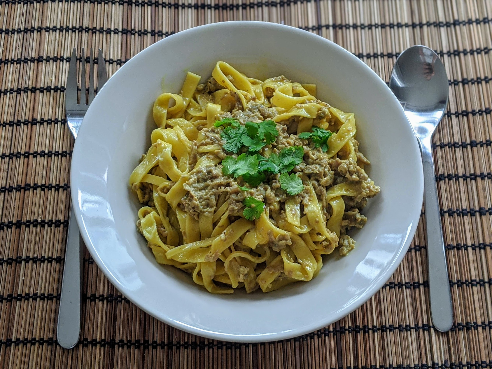

Pâtes aux aubergines

Pour trois personnes :
- Deux aubergines
- 25cl de crème fraîche
- Entre 300 et 500g de pâtes suivant la faim des gens
- Une cuillère à soupe de curry (ou de vadouvan)
- (Facultatif) Un peu de coriandre fraîche
- Sel, poivre, huile d'olive
- Éplucher les aubergines et les couper en tout petits bouts — je fais des mini-cubes avec une mandoline, mais je suppose qu'on peut aussi simplement râper les aubergines.
- Les faire revenir à feu moyen-doux dans une poêle, avec de l'huile d'olive, les épices, du sel et du poivre. Laisser à couvert jusqu'à ce que ça réduise bien, environ une demi-heure.
- Ajouter la crème fraîche, mélanger mettre à feu doux et à découvert. Simultanément, faire cuire les pâtes. Servir ensemble et chaud, parsemé par exemple de coriandre fraîche.
Remarque : ces proportions marchent mal en France, où la crème fraîche se compte par 20cl. En remplaçant les proportions par une grosse aubergine et 20cl de crème, ça devrait faire assez de sauce pour deux bons mangeurs.